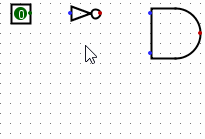
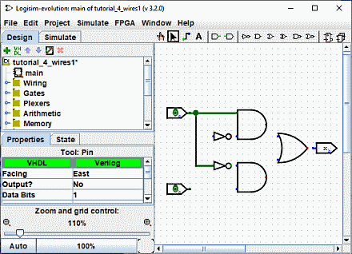

上一节： 第 1 步：添加门电路
第 2 步：添加导线
在画布上放置好所有组件后，就可以开始添加导线了。选择 “编辑工具”（）。当光标位于可以接线的点上时，其周围会绘制一个小绿圈。在该处按住 鼠标左键并拖动到目标位置。

Logisim 在添加导线时比较智能：每当一根导线结束于另一根导线时，Logisim 会自动连接它们。还可以使用“编辑工具”（）拖动导线的一端来“延长”或“缩短”导线。
Logisim 中的导线必须是水平或垂直的。为了将上方输入连接到非门和与门，我添加了三根不同的导线。

Logisim 会自动把导线连接到门电路以及其他导线。这包括在如上所示的T交叉点自动绘制圆点，表示导线已连接。
绘制导线时，可能会看到一些蓝色或灰色的导线。Logisim 中的蓝色表示该点的值为“未知”，灰色表示该导线未连接到任何东西。在构建电路的过程中，这不是什么问题。但电路完成后，所有导线都不应再是蓝色或灰色。（或门未连接的引脚仍为蓝色：这没问题。）
如果确认应该都已连接后仍然有蓝色或灰色导线，就说明有问题。将导线连接到正确的位置非常重要。Logisim 会在组件上绘制小圆点，指示导线应该连接的位置。继续操作时，可以看到圆点从蓝色变为浅绿色或深绿色。
一旦所有导线都连接好，新插入的导线本身也会变为浅绿色或深绿色。

下一节： 第 3 步：添加文本